Distance of Nearest Cell having 1
Problem Statement: Given a binary grid of N*M. Find the distance of the nearest 1 in the grid for each cell.
Examples
Example 1: Input: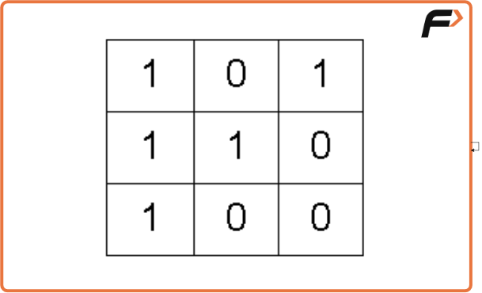
Output: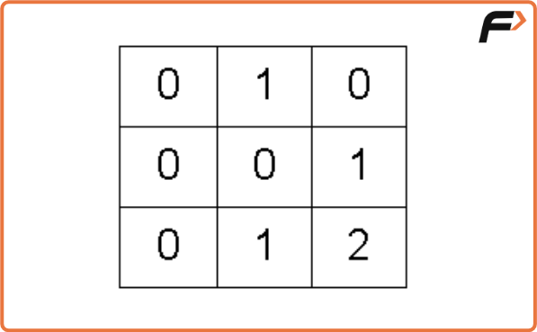
Example 2: Input: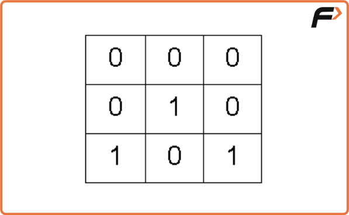
Output: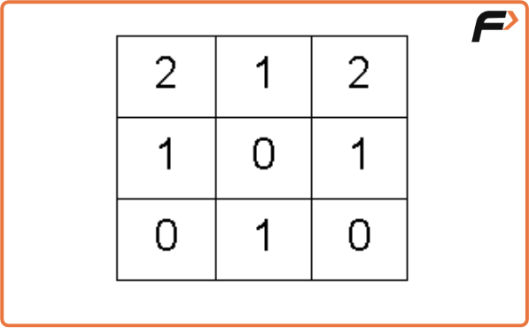
Disclaimer: Here is the practice link to help you assess your knowledge better. It's highly recommend trying to solve it before looking at the solution.
Approach
Algorithm
Intuition
Breadth First Search, BFS, is a traversal technique where we visit the nodes level-wise, i.e., it visits the same level nodes simultaneously, and then moves to the next level.
The intuition is that BFS will take a step from cells containing 1 and will reach out to all zeros that are at a distance of one. Apparently, we can say that the nearest 1 to the 0s is at a distance of one. Again if we take another step, we will reach the next set of zeros, for these zeros 1 is at a distance of two. If we continue the same, till we can go, we can reach all the 0’s possible.
Algorithm
- Queue: Define a queue and insert the pair of starting nodes’ coordinates along with the steps (
). For example, ((2, 1), 2) means cell (2, 1) is the source node and the nearest 1 can be found at a distance of 2 from the node. - Visited array: an array initialized to 0 indicating unvisited nodes.
- Distance matrix: stores the distance of the nearest cell having 1 for every particular cell.
- Push the pair of starting points and its steps (
) in the queue, and mark the cell as visited. - Start the BFS traversal, pop out an element from the queue every time, and travel to all its unvisited neighbors having 0.
- For every neighboring unvisited 0, we can mark the distance to be +1 of the current node distance and store it in the distance 2D array, and at the same time insert <{row, col}, steps+1> into the queue.
- Repeat the steps until the queue becomes empty and then return the distance matrix where we have stored the steps.
Dry Run
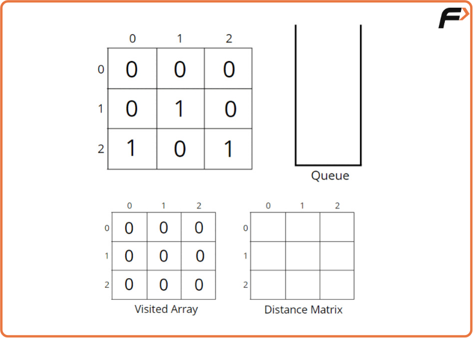
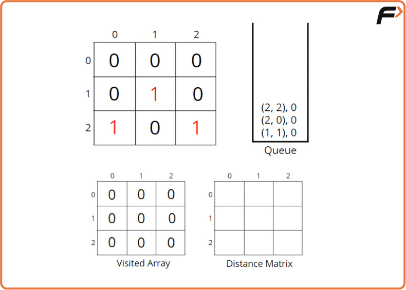
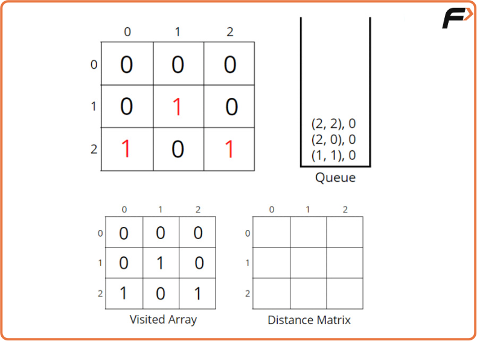
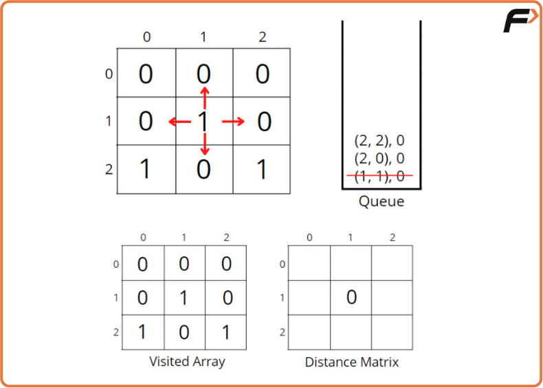
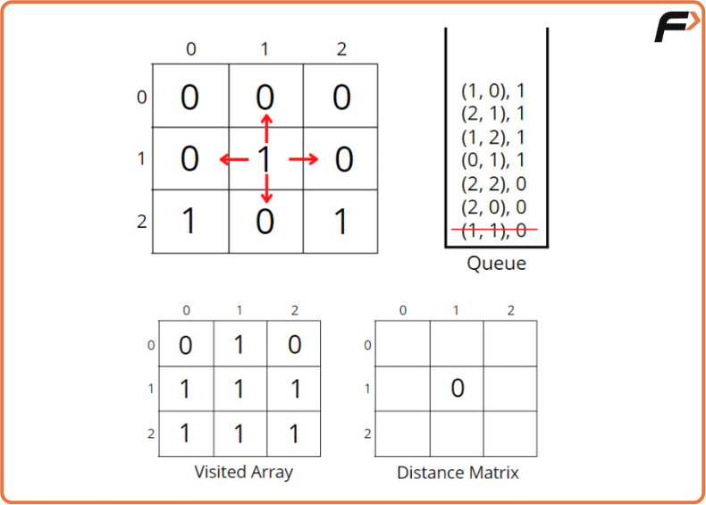
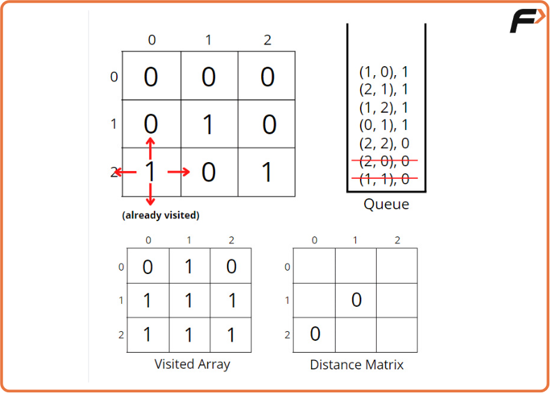
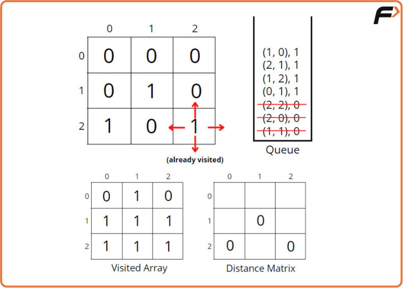
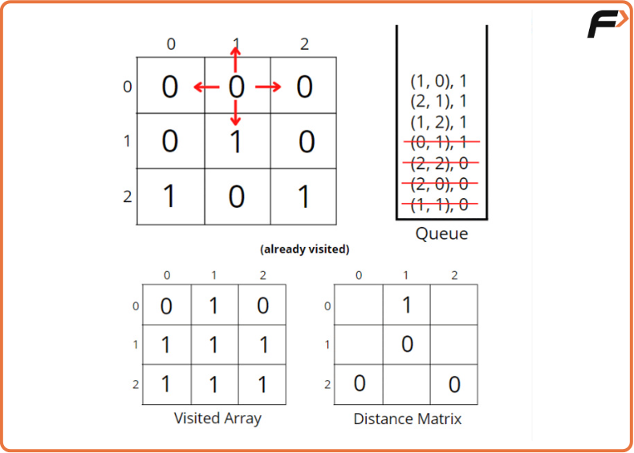
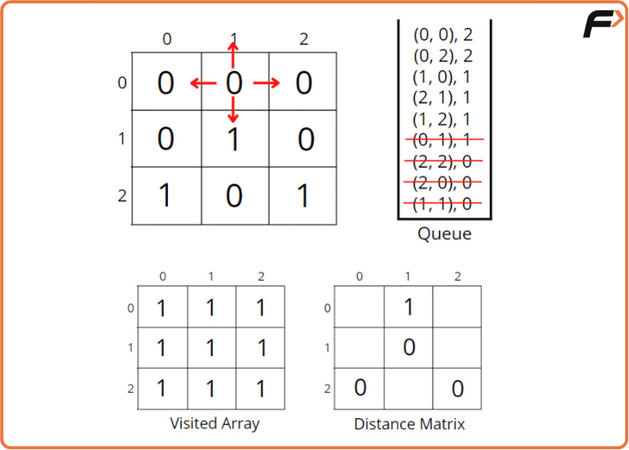
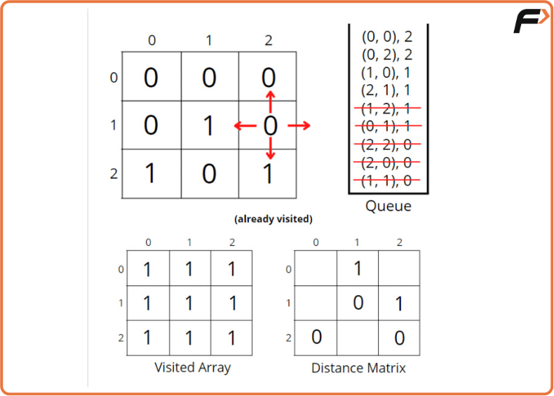
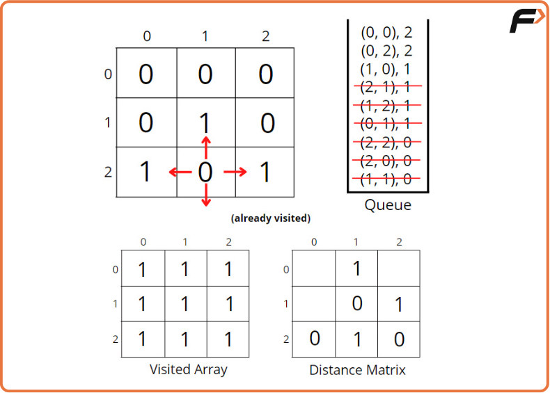
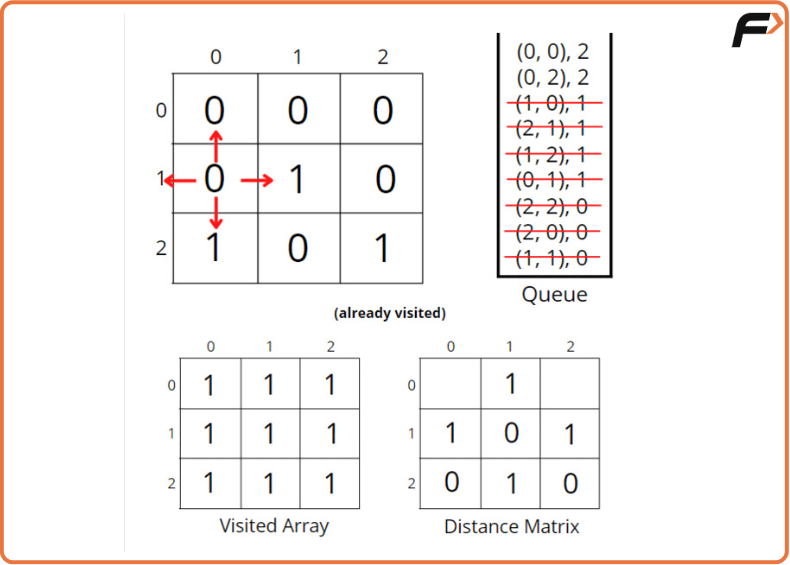
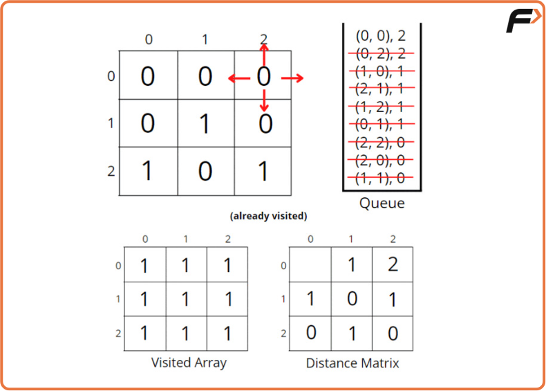
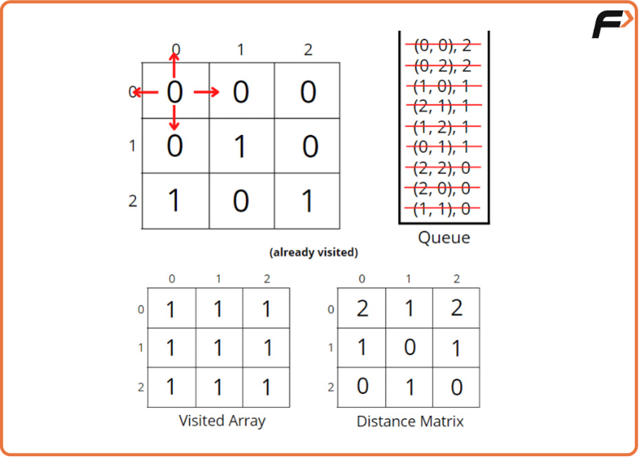
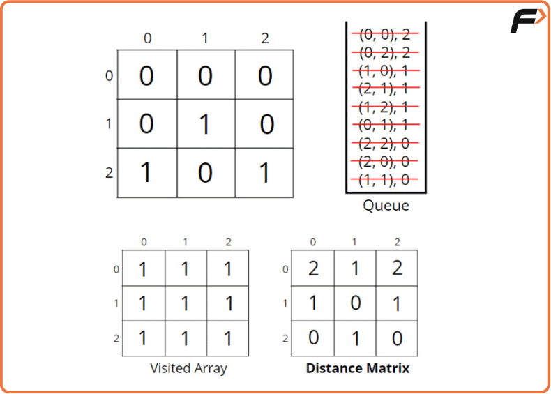
Code
#include<bits/stdc++.h>
using namespace std;
class Solution
{
public:
//Function to find the distance of nearest 1 in the grid for each cell.
vector<vector<int>>nearest(vector<vector<int>>grid)
{
int n = grid.size();
int m = grid[0].size();
// visited and distance matrix
vector<vector<int>> vis(n, vector<int>(m, 0));
vector<vector<int>> dist(n, vector<int>(m, 0));
// <coordinates, steps>
queue<pair<pair<int,int>, int>> q;
// traverse the matrix
for(int i = 0;i<n;i++) {
for(int j = 0;j<m;j++) {
// start BFS if cell contains 1
if(grid[i][j] == 1) {
q.push({{i,j}, 0});
vis[i][j] = 1;
}
else {
// mark unvisited
vis[i][j] = 0;
}
}
}
int delrow[] = {-1, 0, +1, 0};
int delcol[] = {0, +1, 0, -1};
// traverse till queue becomes empty
while(!q.empty()) {
int row = q.front().first.first;
int col = q.front().first.second;
int steps = q.front().second;
q.pop();
dist[row][col] = steps;
// for all 4 neighbours
for(int i = 0;i<4;i++) {
int nrow = row + delrow[i];
int ncol = col + delcol[i];
// check for valid unvisited cell
if(nrow >= 0 && nrow < n && ncol >= 0 && ncol < m
&& vis[nrow][ncol] == 0) {
vis[nrow][ncol] = 1;
q.push({{nrow, ncol}, steps+1});
}
}
}
// return distance matrix
return dist;
}
};
int main(){
vector<vector<int>>grid{
{0,1,1,0},
{1,1,0,0},
{0,0,1,1}
};
Solution obj;
vector<vector<int>> ans = obj.nearest(grid);
for(auto i: ans){
for(auto j: i)
cout << j << " ";
cout << "\n";
}
return 0;
}Complexity Analysis
Time Complexity: O(NxM + NxMx4) ~ O(N x M), the BFS function will be called for (N x M) nodes, and for every node, we are traversing for 4 neighbors, so it will take O(N x M x 4) time.
Space Complexity: O(N x M) + O(N x M) + O(N x M) ~ O(N x M), for the visited array, distance matrix, and queue space takes up N x M locations at max.